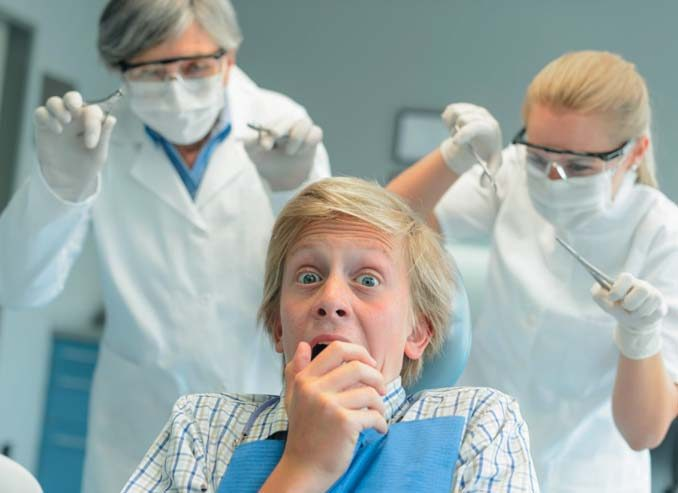
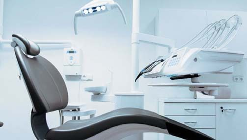
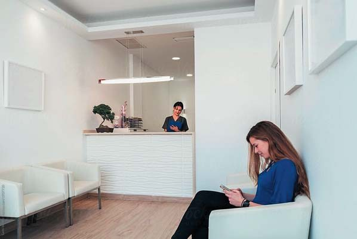
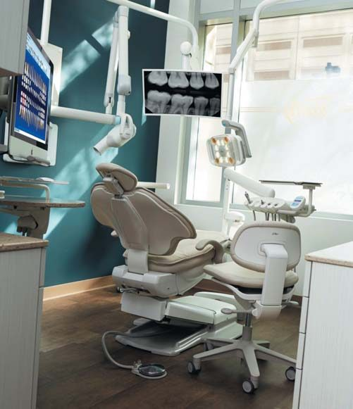
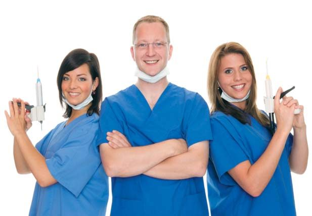

Своя справа · журнал «ДентАрт» 2020 №1
Щоб клініка була успішною
To Make the Clinic Successful
Компанія «Бізнес-рішення для стоматологічних клінік» — найбільша і провідна компанія Ізраїлю у сфері бізнес-консалтингу та маркетингової підтримки стоматологічних клінік. Вона існує вже понад 12 років і спеціалізується на бізнес-супроводі лише стоматологічних клінік. Протягом цих років компанія розробила унікальні методи маркетингу та управління бізнесом для поліпшення циклу продажів і підвищення рентабельності, які успішно впроваджуються у багатьох стоматологічних клініках по всьому світу.
Компанію заснував Габріель Асулін, автор книги «Як перетворити стоматологічну клініку на успішний бізнес», що була перекладена кількома мовами і стала бестселером у середовищі працівників цієї галузі в усьому світі. Габріель Асулін — провідний фахівець у сфері просування стоматологічних клінік. Його досвід налічує сотні успішних контрактів із супроводу і керівництва стоматологічними клініками в Ізраїлі і по всьому світу.
У відповідності з основоположною позицією компанії, заснованою на великому досвіді, який вона надбала в останні роки, майже кожна клініка може подвоїти свій фінансовий оборот протягом кількох місяців.
Як пацієнти обирають клініку?
Варто поміркувати над таким складним питанням: як же все-таки пацієнти вирішують, у якій клініці їм лікуватися? Незважаючи на великі труднощі, пацієнт врешті-решт повинен ухвалити рішення, який лікар і в якій клініці буде його лікувати.
Керівникам клінік і лікарям-стоматологам важливо зрозуміти процес прийняття рішення пацієнтами. Це потрібно не лише для того, щоб усвідомити, що саме потрібно нашим пацієнтам і яким чином вони ухвалюють рішення, але й для внесення таких змін у роботу колективу, щоб пацієнти обрали саме вашу клініку для лікування.
У сфері вивчення поведінки споживачів існує популярна наукова модель, яка називається моделлю Фішбейна. Вона є спробою дати пояснення процесові прийняття рішення про купівлю, коли у споживача кілька альтернатив і він має вибирати між ними. У відповідності з цією моделлю, коли людина хоче прийняти складне рішення про купівлю, вона передусім перевірить, які пропозиції є на ринку, і зважить у середньому три можливих варіанти. У рамках проведеного вивчення ринку клієнт виробить для себе певне уявлення, яке стане його «підсумковою оцінкою» для кожного перевіреного ним товару чи послуги. Ця оцінка ґрунтуватиметься на найважливіших для споживача якостях, якими він керується при виборі товару чи послуги.
Наприклад, якщо студент, у якого недостатньо коштів, захоче купити автомобіль, то найважливішими критеріями, якими він буде керуватися при пошуку, будуть такі: щоб автомобіль був економічним, надійним, мав привабливий і сучасний зовнішній вигляд. Ці характеристики найважливіші для студента, і вони вплинуть на його остаточне рішення про купівлю. Але ось інший приклад. Якщо рішення про купівлю автомобіля ухвалює матеріально забезпечений сімейний чоловік, то він буде керуватися у своєму виборі зовсім іншими критеріями, ніж студент. Він буде зацікавлений у придбанні такого автомобіля, який відповідає підвищеним стандартам безпеки, в якому було б достатньо місця для дітей на задньому сидінні і був би досить великий багажник для розміщення дитячого візочка і покупок.
У відповідності з моделлю Фішбейна, клієнт вираховує середнє арифметичне з оцінок з усіх важливих для нього показників і таким чином дає остаточну оцінку всім перевіреним товарам чи послугам. Ту марку, яка отримала найвищий середній бал серед можливих альтернатив, і обере клієнт. Студент обере автомобіль, який отримав найвищі оцінки за категоріями «економічність» та «надійність», а заможна сімейна людина — найбільш безпечний автомобіль із найпросторішим салоном.
Якщо все це правда, то як же, у відповідності з моделлю Фішбейна, діятиме пацієнт, коли йому потрібно обрати стоматолога чи стоматологічну клініку? Дослідження засвідчують, що він буде діяти приблизно так само. Передусім ми маємо відповісти на два важливих питання:
- Які параметри найважливіші для пацієнта при виборі лікаря чи стоматологічної клініки?
- Яка питома вага кожного з цих параметрів у процесі ухвалення рішення?
Найважливіше правило маркетингу — «Спочатку зрозумій мислення клієнта — тільки тоді ти зможеш задовольнити його потреби». У перші роки моєї роботи як бізнес-консультанта стоматологічних клінік я завжди проводив дослідження ринку для кожної клініки, яку консультував. Я робив це і для того, щоб виявити сильні і слабкі аспекти в роботі конкретної клініки, і для того, щоб зрозуміти спосіб мислення пацієнтів стоматологічних клінік.
Одне із запитань, які ми ставили респондентам у внутрішніх і зовнішніх опитуваннях, звучало так: «Які критерії є найважливішими для Вас при виборі стоматологічної клініки?» Результати опитування аніскільки не здивували мене, але дивували багатьох власників клінік. Однак мене особисто здивувало те, що результати опитувань були практично ідентичні для всіх клінік, у всіх містах і регіонах. По суті, пацієнти керуються одними і тими самими критеріями при виборі лікаря чи стоматологічної клініки, хоча кожен з них упевнений, що в його місті діють інші закони.
Отже, перейдімо до результатів опитувань! Чотири характеристики є найважливішими для пацієнтів стоматологічних клінік:
- професійний рівень лікаря/клініки;
- особисте ставлення до пацієнта;
- місце розташування клініки;
- ціни на медичні послуги, що їх надає клініка.
Напевно, вас поки що ніщо не дивує. Але зверніть увагу на ту питому вагу, якої пацієнти надають кожній з цих характеристик. Професійний рівень лікаря/клініки — це найважливіший параметр, питома вага якого становить 53% у процесі прийняття рішення. Особисте ставлення до пацієнта — другий за значенням параметр, чия питома вага в процесі прийняття рішення становить 31%. Місце розташування клініки — третій за значенням параметр з питомою вагою 9%, а ціна — на останньому місці. І тут ви, напевно, здивовані — параметр, який, на вашу думку, є найважливішим, має частку лише 7% у процесі прийняття рішення пацієнтом про вибір лікаря/клініки.



І якщо все сказане викласти простими словами, то пацієнти дають підсумкову оцінку вам і вашій клініці на підставі найважливіших для них якостей і порівнюють оцінку, поставлену вам, з оцінками інших клінік. Якщо ви набрали найвищий середній бал, то пацієнт вибере вас і вирішить лікуватися у вашій клініці. Але якщо ваш конкурент отримає вищу оцінку, то пацієнт ухвалить рішення лікуватися у нього.
Варто звернути увагу на такий цікавий факт: два параметри — професійний рівень клініки (53%) і особисте ставлення до пацієнта (31%) становлять разом 84% у процесі прийняття пацієнтом рішення про вибір лікаря і клініки! І тому той, хто виграє за двома цими показниками, найімовірніше, матиме нового пацієнта.
Якщо ми скоротимо ті чинники, які сприяють завоюванню серця і гаманця пацієнта, то зможемо зробити висновок, що більшість клінік отримує високу оцінку на підставі критерію особистого ставлення до пацієнта (я стикався лише з небагатьма клініками, співробітники яких «знущалися» над пацієнтами). Тому та клініка, яка зуміє створити імідж високого професіоналізму, врешті-решт завоює пацієнта.
Існує лише одна маленька проблема: саме той параметр, який є для нас найбільш важливим, пов'язаний зі сприйняттям пацієнта. А як уже зазначалося раніше, у пацієнта немає засобів і можливостей оцінити професіоналізм лікаря і зрозуміти, що ми будемо робити в його ротовій порожнині.
Слід зазначити, що викладені вище критерії вибору правильні для більшості пацієнтів, однак є пацієнти, які підходять до питання вибору лікаря/клініки інакше. Наприклад, деякі пацієнти настільки бояться стоматолога, що особисте ставлення лікаря і емпатія, яку він виявляє до них, важливі їм більше, ніж усі інші параметри. Є також пацієнти, для яких найважливішим чинником є вартість лікування, і вони переконують себе, що всі лікарі й клініки однакові. Деякі з них неспроможні заплатити ту суму, яку ви просите за лікування, навіть якщо вони хочуть лікуватися у вас.
Однак, як свідчать наші дослідження, для значної більшості пацієнтів такі параметри, як професійний рівень лікаря/клініки і особисте ставлення, є найважливішими показниками, якими вони керуються у процесі вибору лікаря/клініки.
Багато стоматологів помилково вважають, що пацієнти ідуть до їхніх конкурентів, оскільки ті пропонують їм нижчі ціни. Завжди легше звинуватити в усьому ціни конкурентів, ніж зізнатися, що ви допустили помилку в процесі продажу стоматологічного лікування.
Якщо пацієнт обрав вашого конкурента, у якого нижчі ціни, то він, у більшості випадків, обрав його не тільки через ціну. На його вибір вплинула також та обставина, що дорожча клініка не змогла наочно показати йому, що вона вирізняється високим професіоналізмом або що є щось інше, що вона дає пацієнтові за вищу суму, яку він платить за лікування.
Пацієнт готовий заплатити більше (в розумних межах), однак тільки в тому випадку, якщо зрозуміє, яку вигоду він отримає за вищу сплачену ціну. Але оскільки пацієнт не бачить жодної різниці між вами і вашим конкурентом за ступенем професіоналізму та особистісним ставленням до нього, то він, ясна річ, надасть перевагу дешевшій клініці.
Як грамотно перенаправити пацієнта для лікування у іншого лікаря?
Одна з тем, які дуже хвилюють стоматологів, — це труднощі в перенаправленні пацієнта для лікування у інших лікарів-стоматологів. З одного боку, вам дуже лестить, що пацієнти хочуть лікуватися тільки у вас, але з другого боку, якщо ви хочете просуватися, розвивати клініку і збільшувати прибуток, одержуваний за годину роботи, то ви не зможете постійно лише ставити пломби і лікувати корені зубів.
Існує одна дуже відома і поширена проблема — лікарі з багаторічним досвідом роботи, які є великими фахівцями в галузі хірургії та повного відновлення зубів, люди, які змогли створити успішні клініки, де працюють молоді й енергійні лікарі, і донині заповнюють свій розклад дрібними і не дуже прибутковими медичними процедурами. Іноді такі лікарі навіть виконують гігієнічне чищення зубів. Чому? Тому що пацієнти, які роками лікувалися у них, не готові, щоб їх лікував інший лікар.
Усі ми розуміємо важливість профілактики стоматологічних захворювань, терапевтичної стоматології, але правильнішим для будь-якої клініки, як з медичної, так і з комерційної точки зору, був би такий розподіл роботи: досвідчені лікарі будуть виконувати складні види лікування зубів, які вимагають великого досвіду і майстерності, а молоді лікарі виконуватимуть простіші види лікування.
То що ж робити? Як можна перевести пацієнтів, які стільки років лікуються у тебе, до іншого лікаря? Перш ніж ми перейдемо до тактичних питань, що і як потрібно зробити, слід висвітлити один важливий аспект: у більшості випадків пацієнти не переходять до іншого лікаря тому, що той лікар, у якого вони лікуються, абсолютно не бажає їх кому-небудь передавати. Звідки це відомо? Усе дуже просто. Багато досвідчених лікарів самі не лікують корінь зуба, не виконують складну хірургію, а передають пацієнтів іншим лікарям клініки, і тоді чудесним чином пацієнти все-таки переходять до інших лікарів. Я не зустрічався з таким випадком, щоб лікар, який роками не лікував корінь зуба, виконував складне лікування кореня, бо пацієнт наполягав, щоб лікував його тільки цей лікар.
Так чому ж у цих випадках пацієнт переводиться до іншого лікаря, а в інших випадках не готовий перейти, коли потрібно поставити кілька пломб чи коронок? Відповідь дуже проста: лікар не дуже хоче передавати пацієнта. Тому перш ніж починати процес роботи, керівництво, лікарі, весь персонал клініки мають ухвалити чітке й однозначне рішення: цей лікар не ставить пломби, не робить окремі коронки і, ясна річ, — не виконує професійне чищення зубів. Усе, крапка! Потрібно точно визначити, які види лікування виконує той чи інший лікар.


А тепер розгляньмо питання, як перевести пацієнта для лікування до іншого лікаря. У більшості стоматологічних клінік неправильно пояснюють пацієнту, чому він повинен пройти лікувальну процедуру в іншого лікаря. Пацієнт каже: «А хто такий цей лікар? Я його не знаю! Я хочу, щоб мене лікував мій лікар!» І яку відповідь зазвичай дає адміністратор або асистент стоматолога? «Лікар Іванченко вже не ставить пломби, його щоденник і так заповнений».
Тож не дивно, що після такої відповіді пацієнт не захоче перейти до лікаря Покровського. Пацієнт міркує так: «Лікар Іванченко настільки успішний, що я як пацієнт йому вже не потрібен. Клініка думає про те, що краще для лікаря, а не про те, що краще для пацієнта».
До цих міркувань пацієнта додається ще й гнітюча думка: «Я тут уже 20 років лікуюся з усією своєю родиною, спрямував у цю клініку стільки своїх знайомих — і ось чим мені за це віддячили! У лікаря немає часу мене прийняти???» Не дивно, що пацієнт сердиться і погрожує більше не лікуватися в цій клініці, якщо лікар Іванченко його не прийме. У такій ситуації швидше за все лікар піде назустріч пацієнтові і скаже: «Ну добре… Я справді не хочу втратити його і всю його сім'ю… Записуйте його (і всю його сім'ю) на прийом до мене для пломбування і виконання інших дрібних процедур…»
Описана вище ситуація була б неможлива, якби персонал клініки правильно поводився у подібній ситуації і змінив свій підхід до пацієнта. Передусім під час запису на прийом адміністратори не обговорюють з пацієнтом питання, хто його лікуватиме. «Володимире Юрійовичу! Спочатку ви пройдете процедури у зубного гігієніста Світлани. Після цього ми вас записуємо на прийом до лікаря Покровського — він вам пролікує корінь зуба і поставить три пломби. Потім ви прийдете на прийом до лікаря Іванченка, який виконає хірургічне лікування…» Треба просто поставити пацієнта перед фактом.
Зверніть увагу на ще один дуже важливий нюанс: персонал клініки повинен пояснити пацієнтові, що він буде лікуватися у лікаря Покровського не тому, що лікар Іванченко не може знайти для нього часу, а тому, що в клініці існує розподіл праці і кожен лікар виконує такі процедури, які він найкраще вміє робити, і все це в інтересах пацієнтів. Коли пацієнт зрозуміє, що його направили до іншого лікаря в його ж інтересах, а не заради корисливого інтересу лікаря чи клініки, то він з легкістю погодиться. Зрозуміло, потрібно щось сказати на користь нового лікаря і назвати пацієнтові одну-дві вагомі причини для переходу. Це відбувається таким чином:
«Володимире Юрійовичу! Ми хочемо надати вам лікування на найвищому рівні. Тому пломби вам поставить лікар Покровський: у нашій клініці саме він на цьому спеціалізується, і він це зробить найкраще. Лікар Покровський використовує у своєму лікуванні найсучаснішу методику. До речі, він викладає на факультеті стоматології нашого медуніверситету. Повірте, якщо мені знадобиться поставити пломбу, то я звернуся до нього. Коли ви дійдете до етапу імплантації та протезування, вас лікуватиме лікар Іванченко. Ясна річ, він буде контролювати весь процес вашого лікування».
Інший спосіб підтвердження професіоналізму лікаря, до якого повинні перевести пацієнта, — це підготовка інформаційного листка з короткою біографією лікаря. Інформація, що міститься тут, має підкреслювати професіоналізм лікаря і переконати пацієнта, що він у надійних руках.